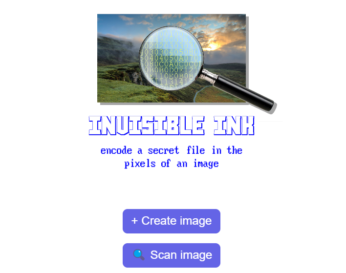
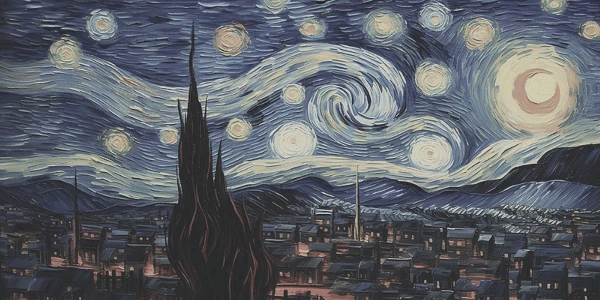
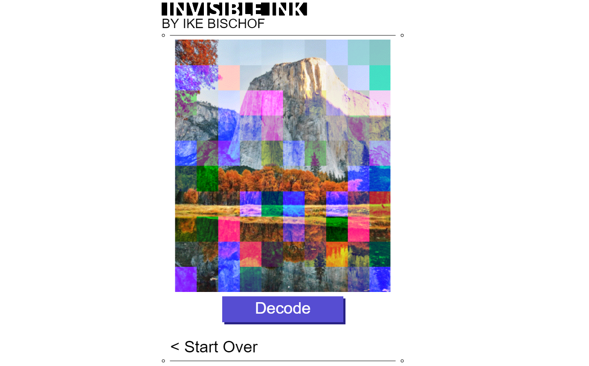
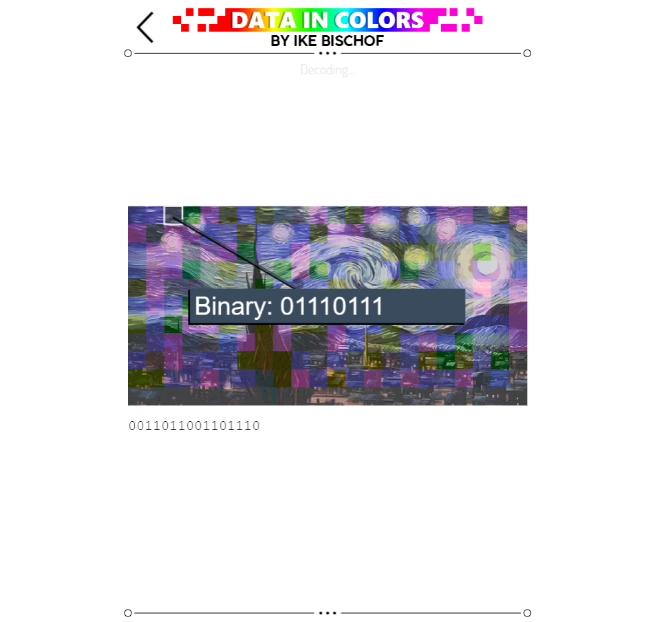
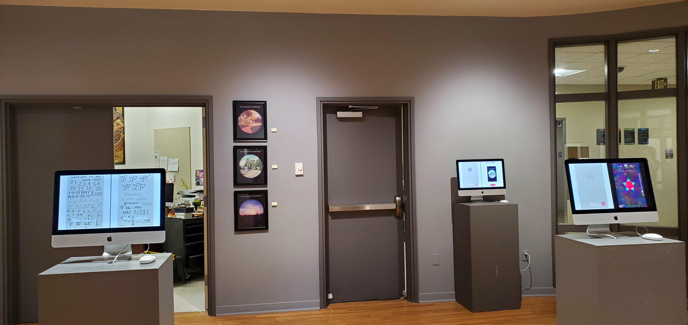
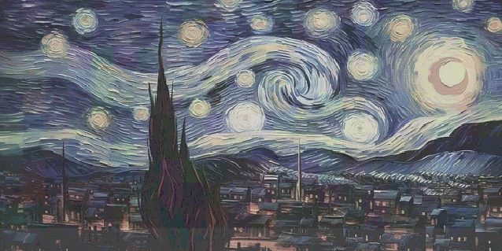

November 2022
Data In Colors allows users to turn any data, such as music or documents, into a mosaic of colors similar to a QR code, by encoding the raw binary numbers of the file as a sequence of colorful squares. Use the link above to see an example of how it can decode an image that has data in it.
For access to the full site, which you can use to create your own encoded images, click here:
Visit Data In ColorsNote: if you want to share an encoded image with others, I don't recommend sending the image over SMS, or social media apps like Instagram or Reddit. This could compress or resize the file by a small amount, which would corrupt the encoded data. You could instead send the file as an email attachment, or use something like Google Drive.
Note: This video, and the program itself, use a slightly inaccurate explanation for the sake of simplicity. A detailed technical description is further down the page.
This is the video that mainly inspired Data In Colors: Can you fit a whole game into a QR code?
This is my first program that used the idea of recoloring an image to store file data. It's from 2021, or maybe earlier. Instead of covering the image in a grid of colorful squares, this version instead just recolored individual pixels of the image. It would modify the image in a way that had hardly any effect on its appearance, which I thought was appealing, because that way, you could encode a secret message in an image without anyone knowing. So I called it 'Invisible Ink'.
 Visit Invisible InkNote: Because it's a prototype, Invisible Ink may freeze or crash if it's given large or faulty inputs.
Here is a picture of Starry Night that has been encoded with Invisible Ink. Can you see any artifacts of the encoding?
The only changes made to the image are in the first row of pixels, at the very top.
Unsurprisingly, if you create a program that changes images, but only in ways that are invisible, it's a bit hard for people to understand what it does.
So when I decided to apply for Sierra College's Hallberg award, an art scholarship given to four faculty-selected students, I wanted to create a new project with the Invisible Ink concept, but one that actually visually clarifies what it does. Then, I could put the project on my application for the scholarship.
I wanted the program to play an animation as it's decoding to give the user an idea of what it's thinking and how it works. Then, I could combine this with a verbal explanation like my video.
This prototype was mostly just a demo of the explanatory animation, so I could show it to friends and family to see if it made sense to them. This version of the program doesn't actually decode the image; it just pretends to. And the music it "decodes" is actually just preloaded. But I won't tell anyone if you don't.
 Visit the Minimum-Viable ProductFor some reason, I still called this prototype "Invisible Ink", even though the "ink" is very much visible this time.
Here's a problem: On a computer, you'll often see the raw data of a file represented as hexadecimal digits instead of binary digits. It's really just two ways of representing the same thing. So my program actually works by reading the contents as hex digits, which is illustrated in this prototype with the animated yellow numbers. But more people are familiar with the concept that files are made of ones and zeros, and my friends and family helped me realize that I could just explain it that way. To be fair, hex and binary are kind of interchangeable, so it's not really inaccurate to say that the program decodes binary data.
Most people also didn't understand that there was any connection between the yellow digits and the resulting music. One person asked me if each yellow digit corresponded to a note in the song... clearly, this animation was not very helpful.
In the final version, when it scans your image, it highlights every square, one by one, and it shows you how the color of the square translates to a sequence of binary numbers, which then get added to the bottom of the screen. At the end, all the binary numbers get smushed together to make a digital file.
In reality, the program could just decode the image instantly, if I didn't make it slow down to show the user what it's thinking as it goes.
 Visit the Final Product DemoWhen I submitted this project on my Hallberg application, the website came preloaded with some photos that I took around Roseville. The audio files that were encoded inside each photo contained ambient sounds from the place where the photo was taken, which you can hear in the demo above.
I wrote "The Sounds of Roseville" as the title of each image, as a reference to "The Sounds of Earth", the golden vinyl record that was put on the Voyager I probe. It was made for any aliens that might have found the probe, and it contained some audio recordings of various Earthlings. The Sounds of Earth also had a feature that's kind of the inverse of my project: some of the audio contained data for images of Earthlings. The aliens could view the images if they followed the nonverbal decoding instructions that were engraved on the backside of the record.


In May 2022, I received the Hallberg award, mostly thanks to Data In Colors. The project was put on display in the Ridley gallery at Sierra College the following November, along with some other projects. In the back, there were some framed prints of the Sounds of Roseville images so visitors could get a better look at the very small squares.
Here's an accurate and detailed description of how Data In Colors encodes an image with file data (how it creates the colored squares):
Note: the program actually reads the raw contents of the input file as hexadecimal digits (hex values), not binary digits. It's just a different way of representing the same thing.
The image is going to be covered in a grid of colored squares that I just call chunks. To know how wide the chunks should be (in pixels), we need to know how many chunks will be necessary to encode the file, which we can calculate based on how many hex digits are in the data of the file we want to encode.
chunk_count = size_of_file_in_hex / 3 (rounded up)
chunk_width = square root( (image_width * image_height) / chunk_count ) (rounded up; min = 5px, max = 63 * 3 px)
With this information, the program can rescale the image to neatly fit a grid that has chunks of that size.
The program recolors the first two pixels of the image (in the upper right corner) to give a visual indication that the image has valid data in it. If an image is missing these pixels, the decoder knows that the image has no data, or that the data is corrupt, which can easily happen if the file is slightly compressed or resized.
The RGB values of both pixels are rounded to the nearest multiple of 64. Then, some specific values are added to each pixel:
First pixel: +10 to Red / +1 to Green / +13 to Blue
Second pixel: +9 to Red / +11 to Green / +5 to Blue
This way, the decoder can check if the image has valid data by reading the color values of the first two pixels and seeing how high each value is above a multiple of 64. If the first red value is 10 above a multiple of 64, and the first green value is 1 above, etc. then the image must be encoded with valid data, because it's very unlikely that that would happen six times in a row by random chance.
That's how the decoder can tell you right away that something is wrong if you feed it a random image with no encoded data. This step is important, so the program doesn't waste the user's time decoding a meaningless image.
I could've chosen any RGB values for the validity marker. I just chose 10, 1, and 13 as a reference to A113, which is a frequent Easter egg in Pixar Films (10 corresponds to 'A' in hex). And I chose 9, 11, and 5 because the 9th, 11th, and 5th letters of the alphabet spell IKE. So basically, every generated image has a little digital autograph from me. Be sure to hold onto it if you would like to become super wealthy someday.
(Insert your own NFT joke here)
The program writes the chunk width into the third pixel of the image. With that information, the decoder can know exactly how many pixels to skip over when scanning the chunks. To write the chunk size, the program rounds the third pixel's RGB values to the nearest multiple of 64, and then adds the chunk width (in pixels) to the pixel's R value. If the chunk width is more than 63 pixels, then it adds the remainder to the G value, and if it's more than 63*2 pixels, then it adds the remainder to the B value. This means chunks can be no larger than 63*3 pixels wide (which is no problem).
Now, when the decoder scans the image, it can just check the third pixel to see how high each RGB value is above a multiple of 64, and take the sum to know how wide the chunks are.
Here's a problem: files don't exactly have a standard way of telling you what type of file they are, other than the file extension in the name. For example, if you look at the raw contents of a PNG file in a hex editor, you should see that the first few hex digits spell "PNG" (encoded in ASCII), but not necessarily in the exact same place that a JPEG file spells "JPEG" in its hex code. And ZIP files don't actually spell "ZIP" at the start; they spell "PK", which stands for Phil Katz, the creator of the ZIP format. So I guess you can have his digital autograph too.
Some file formats may not even give you any direct indicator of their format. You'd have to use other clues to figure out what kind of file it is if you didn't have the file extension. In fact, you can download file-identifying software designed for that very purpose.
To make things easier, it would be worthwhile for Data In Colors to store the file extension somewhere in the image so that the decoder can know what type of file it's decoding without having to hunt for the answer. So the program uses the fourth and fifth pixels of the image for that.
The RGB values of the fourth and fifth pixels are rounded to the nearest multiple of 38, and the program adds a number (between 0 and 37) to each RGB value, which corresponds to an index on this list of characters:
?0123456789abcdefghijklmnopqrstuvwxyz_
That way, the program can record extensions that are up to six characters long. If it's less than six characters long (which is likely), then the remaining slots are filled with question marks, which the decoder will ignore. If it's more than six characters long, or if it uses characters that are not on the above list, then the user will be told to pick a different file.
(Look, if you really need to encode a JPEG2000 file, you can build your own image encoding website)
To reiterate, the raw data of the file we're encoding is represented as a series of hex values. Each hex digit represents a number between 0 and 15. Each chunk of our image can store three hex digits: one in each RGB color channel.
To do that, all of the color values of the pixels in each chunk are rounded to the nearest multiple of 17. Then, a number between 0 and 15 is added to each pixel's R, G, and B values, depending on the hex digit being encoded.
After all the chunks are made, there's almost always extra leftover space in the image. The decoder needs to know to ignore this extra space. So for all the pixels in the extra space, the number 16 is added to their R, G, and B values. That way, if the decoder notices that a pixel's RGB values are 16 above a multiple of 17, then it knows to stop scanning.
The reason the program uses so much modular arithmetic (such as adding values to multiples of 17) is that it guarantees that every pixel's color values are never more than 17 units away from what they were in the original image, which ensures that the final result still closely resembles the image that we started with.
In fact, at this point in the process, the image usually won't look like it's changed very much:
Can you see the square chunks? They cover almost the entire image. Try looking closely at the black tree.
To make it clear what's happened to the image, we should make the squares stand out more. So the final step is to add or subtract multiples of 17 to the color values in each chunk, because this actually won't have any effect on the data we've encoded.
I created an algorithm to randomly add and subtract multiples of 17 in a particular way that I thought looked visually interesting. That's why, if you input the same image and file into Data in Colors more than once, you'll get a different-looking result every time: because it's randomized.
This is a little dishonest, because it makes it look like the file data is the reason that the squares are so vibrant, when in reality we've just added some random variation. But the colors of the chunks really do encode the file data, and the decoder really does scan the image to decode the hidden file, which is the most important thing. This is just some extra decoration to make it clear. Again, I won't tell anyone if you don't.